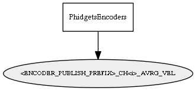

Global overview
All modules
All variables
All commands
Mission files
Pipelines
Variable: <ENCODER_PUBLISH_PREFIX>_CH<i>_AVRG_VEL
Variable info:
Variable name
Short description
Who publishes it?
Who subscribes to it?
<ENCODER_PUBLISH_PREFIX>_CH<i>_AVRG_VEL
for each channel (i=0,1,2,3), the averaged velocity, in ticks/second, according to the given filter window length.
PhidgetsEncoders
Variable graph:

Detailed description:
for each channel (i=0,1,2,3), the averaged velocity, in ticks/second, according to the given filter window length.
Page generated by
Mooxygen 1.1.0
at Thu Jan 22 11:30:21 2015